Video Archief
Volledige weiding van het H. Nikolaasklooster in Hemelum
Gela Tchikanashvili heeft de volledige weiding van het klooster op beeld gebracht. Hier kunt u meekijken hoe in alle detail de kloosterweiding uit 2001 heeft plaatsgevonden
Documentaire vanaf het begin van het klooster.
Gela Tchikanashvili heeft de eerste beelden opgenomen van hoe het klooster begon. De renovaties en het begin van het monastieke leven
Documentaire 10 jaar klooster Hemelum.
Gela Tchikanashvili heeft bij het 10-jarig jubileum een docu gemaakt over de ontwikkelingen die het klooster heeft ondervonden in haar 10 jarige bestaan
Het onbeschrijfelijk woord
Gela Tchikanashvili
Foto's Eerste liturgie Leeuwarden
Hier kunt u kijken naar een paar foto's die gemaakt zijn in de Lutherse kerk van Leeuwarden, waar de eerste Goddelijke liturgieen werden gehouden in Leeuwarden
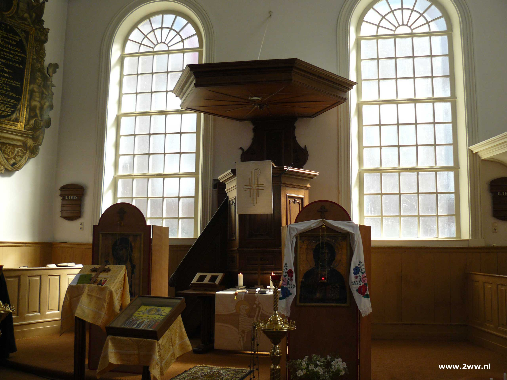
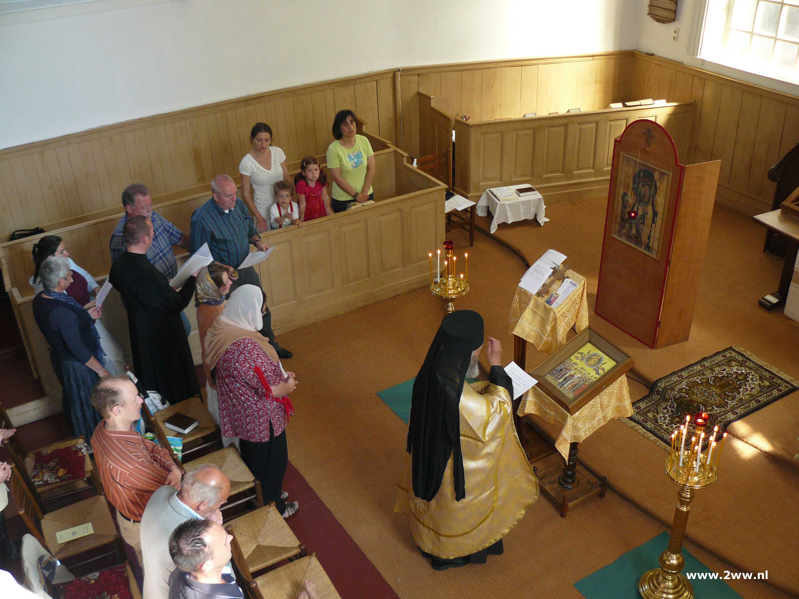
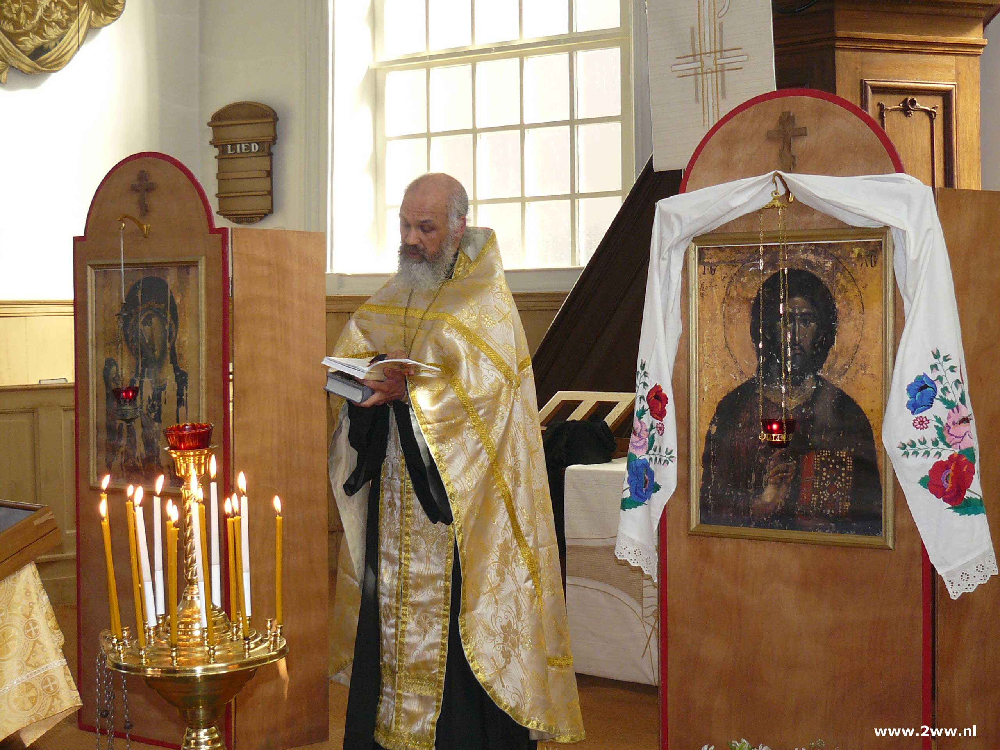
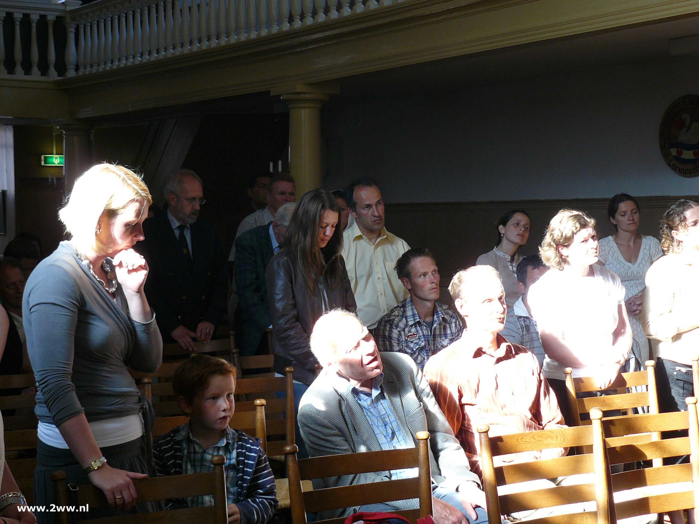
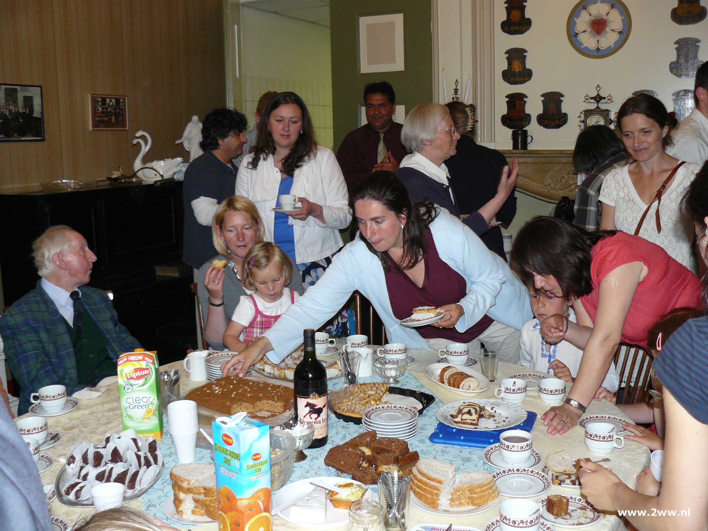
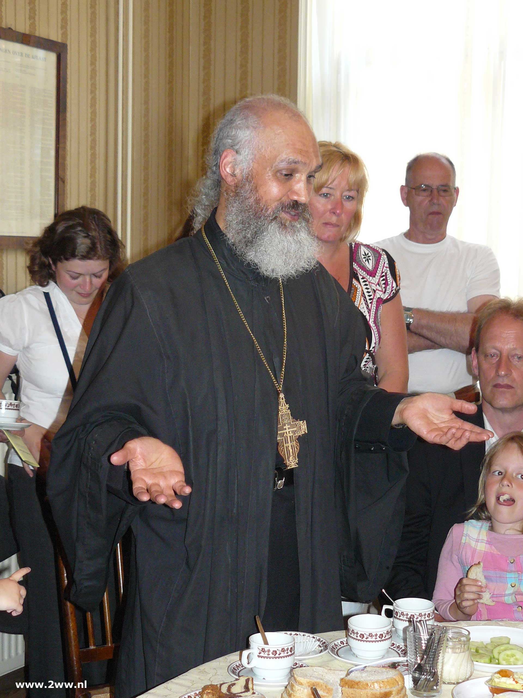
Foto's Odulphus bedevaart 2008
Elk jaar organiseert het klooster de Oduphus-bedevaart. Hier zijn een paar prachtige foto's van hoe dat in 2008 werd gevierd
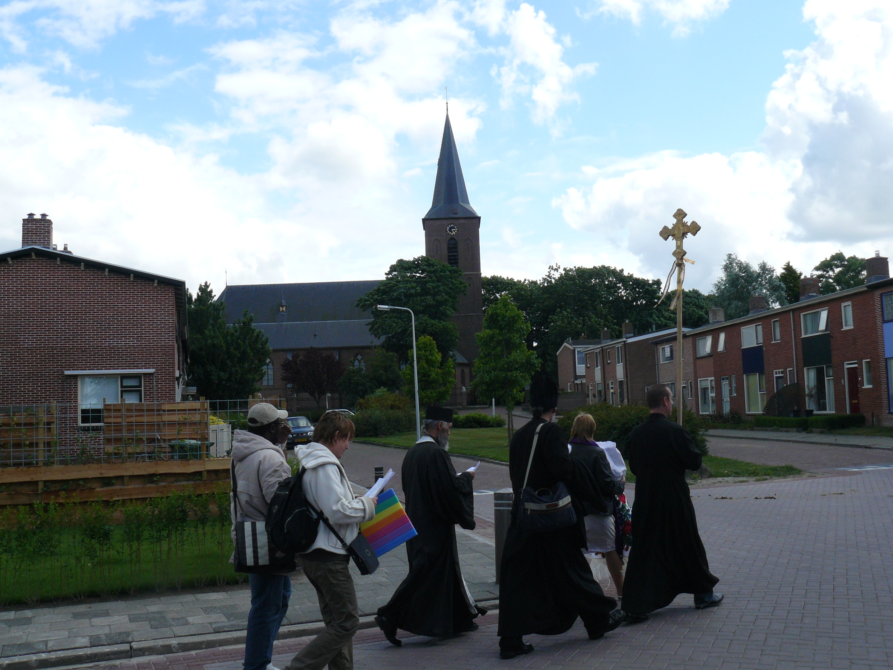


Foto's theophanie 2010
Theofanie 2010 was uiterst koud en zorgde voor prachtige fotos. Het was bijna Rusland hoe koud het was, en gelovigen konden alleen de duik doen wanneer er een gat in het ijs werd gezaagd.
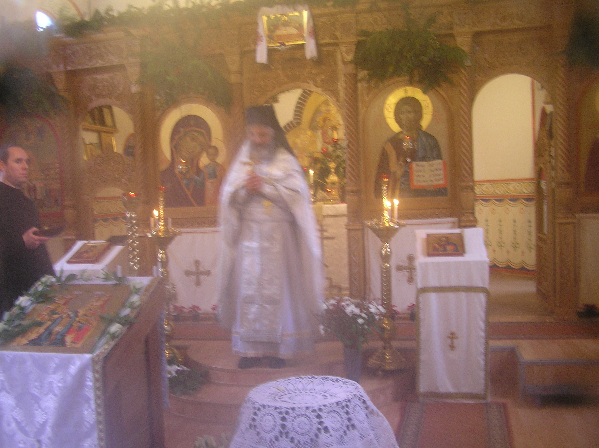
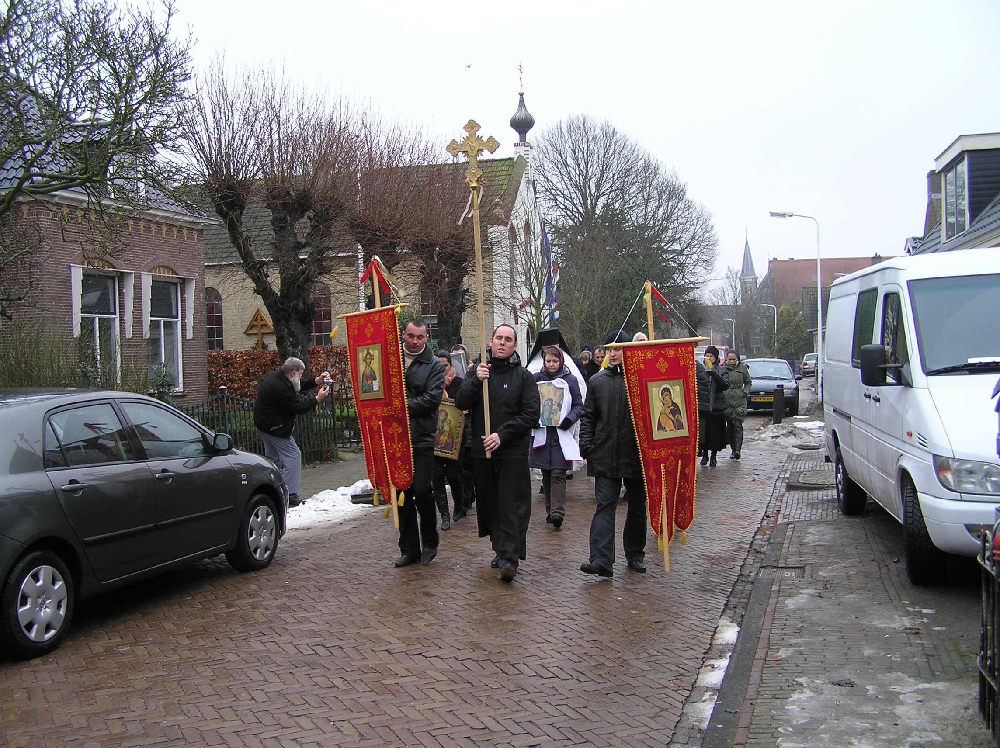
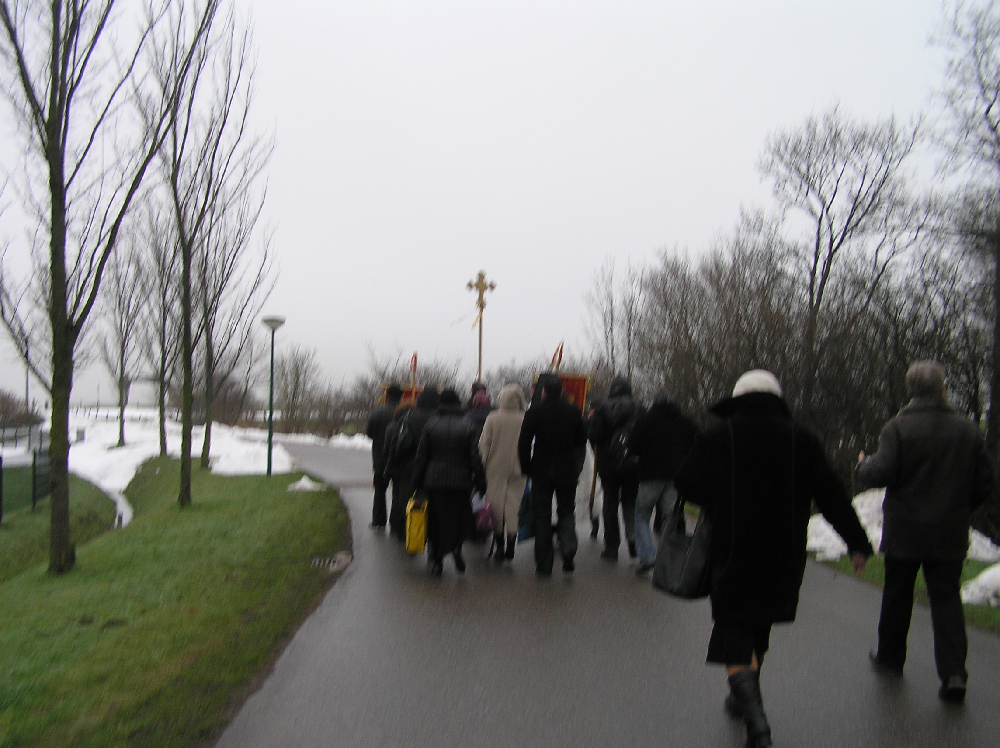
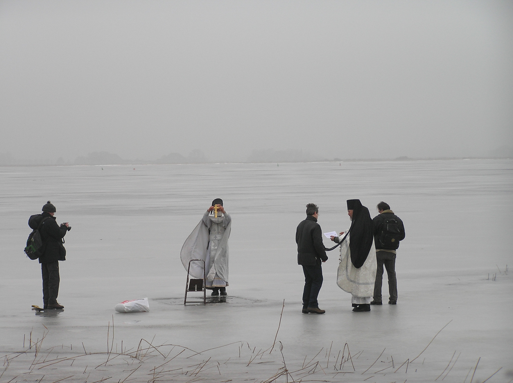
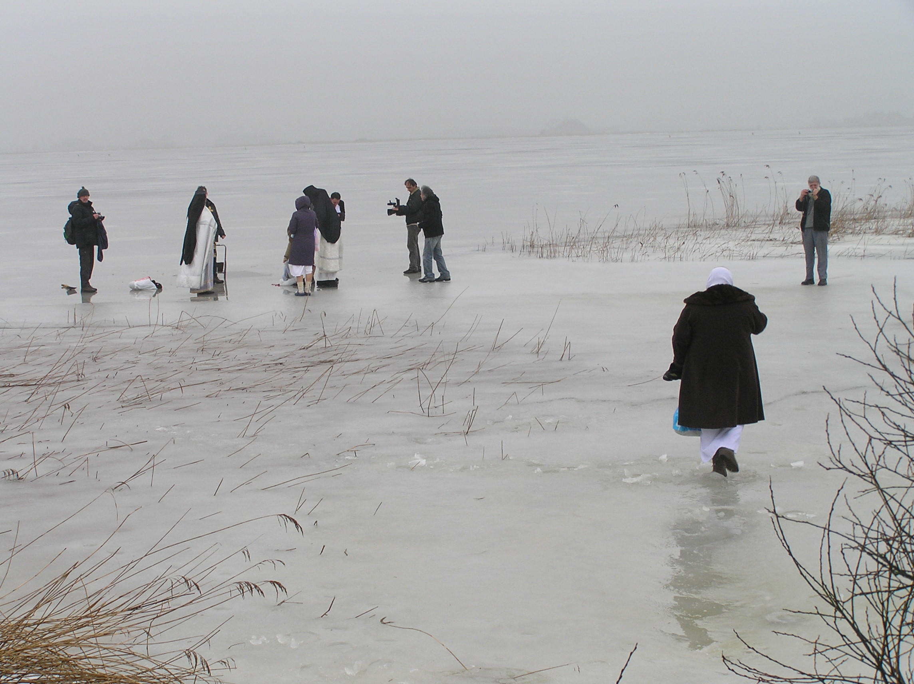
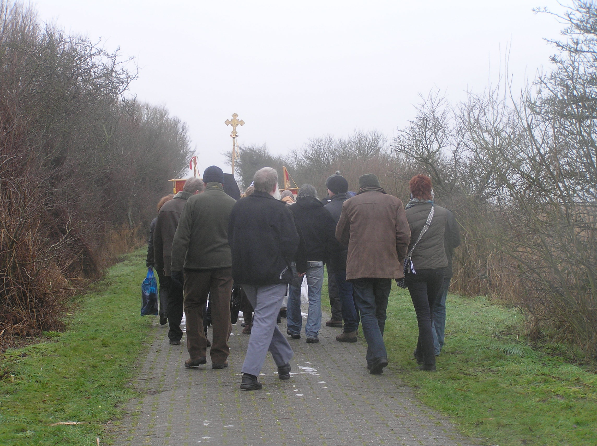
Alle dank aan Wiebe Wesstra voor de foto's